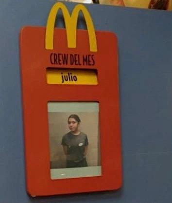
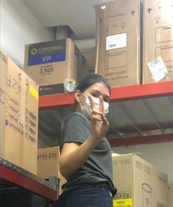
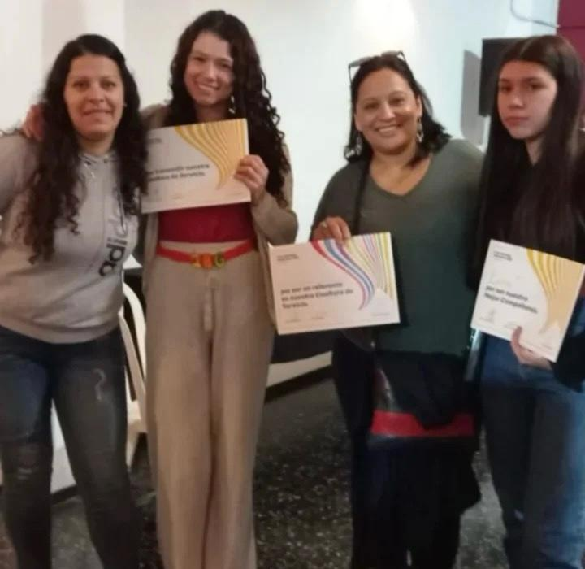
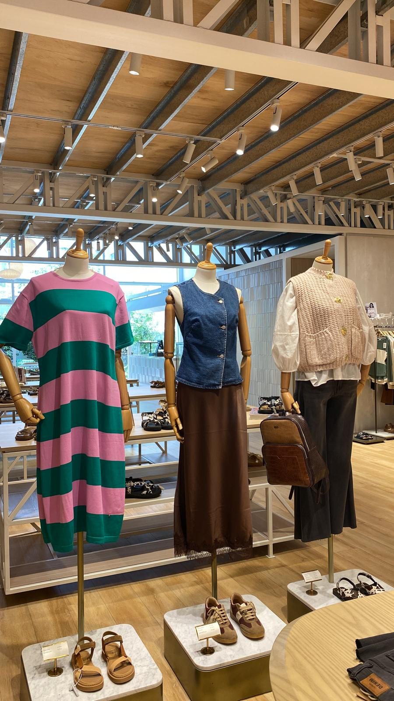
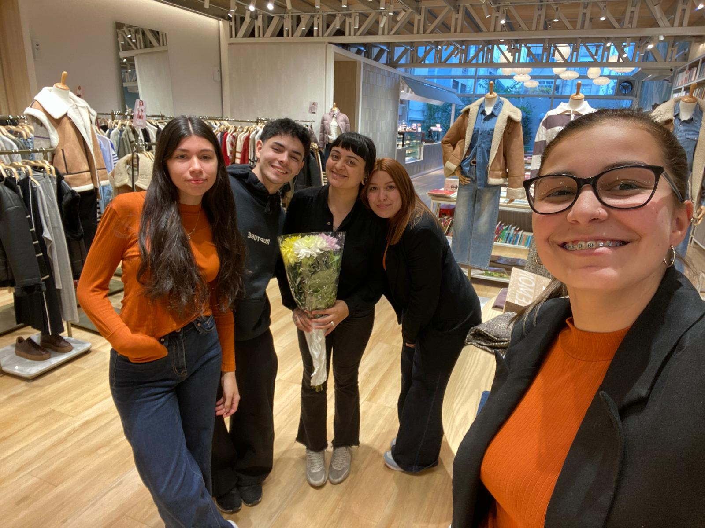

Eliana Tuduri
Montevideo, Uruguay | 092797878 | elianatuduri3@gmail.com
Sobre mí
Tengo 22 años y actualmente estudio Analista en Sistemas en ORT (turno nocturno). Me apasiona la tecnología y busco especializarme en ciberseguridad. Trabajo desde los 18 años en atención al cliente.
Soy una persona responsable, organizada y proactiva. Me adapto rápido y disfruto aprender constantemente.
Cuento con casi 4 años de experiencia en distintos rubros, destacándome por mi crecimiento dentro de cada empresa.
Experiencia laboral
McDonald's - Entrenadora
1 año y 7 meses
Ascendí a entrenadora, capacitando en caja, cocina y atención al cliente. También gestionaba metas y organización de turnos.



Tienda Inglesa - Cajera
1 año
Atención al cliente y manejo de grandes sumas de dinero. Cobro de servicios como UTE, OSE y ANTEL.
Lemon - Vendedora
1 año y 2 meses
Puesto como vendedora. A los 3 meses ascendí a segunda vendedora. Mi tareas eran ventas, atención al cliente y e-commerce: pedidos, reclamos, WhatsApp, mails y llamadas.


Conocimientos técnicos
HTML, CSS, Java, C#, APIs REST, SQL, Scrum, GitHub, paquete Office y Google Drive.
Habilidades
Comunicación, trabajo en equipo, responsabilidad, organización y rápida adaptación.
Idiomas
Inglés básico
Nivel académico
Bachillerato completo (IAVA).
4º semestre Analista en TI - ORT